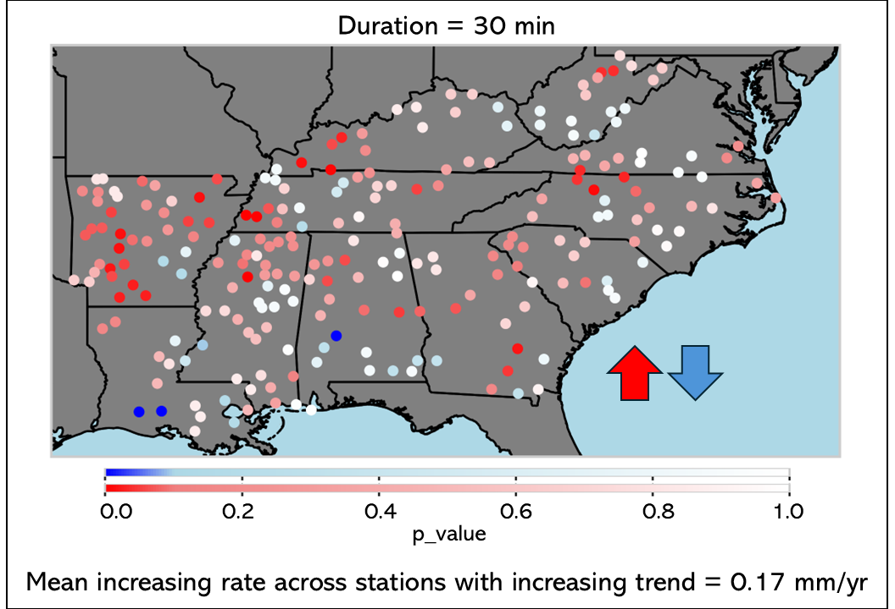
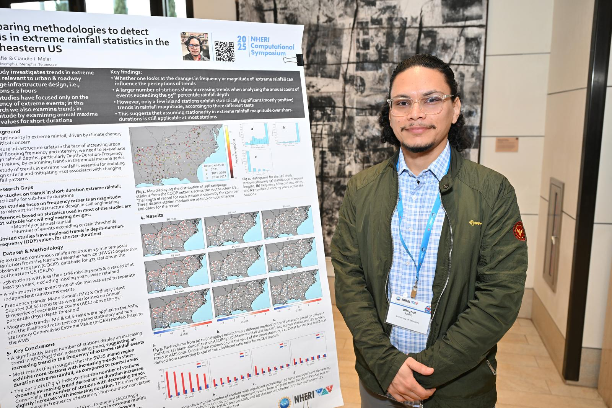
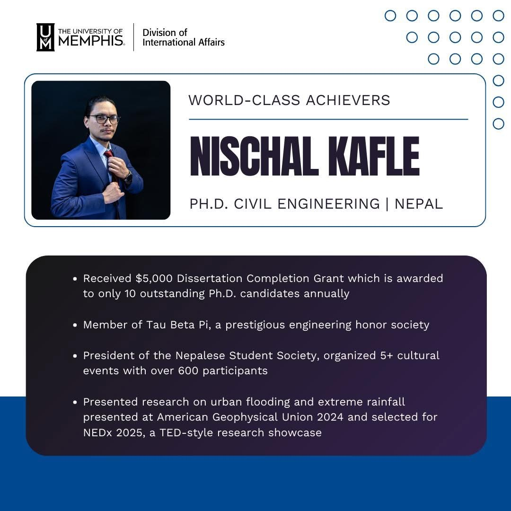
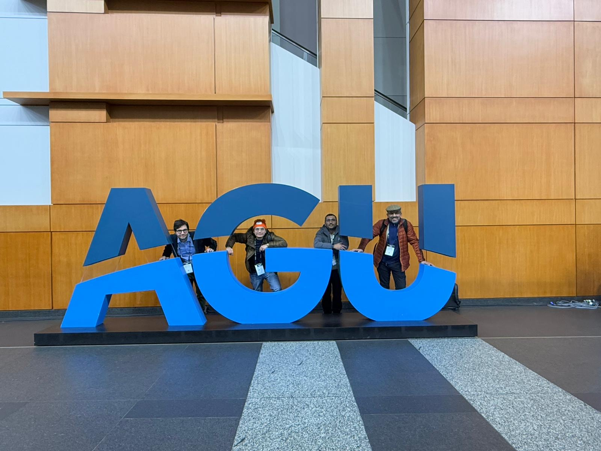
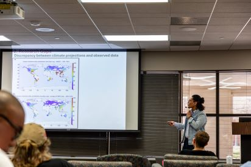
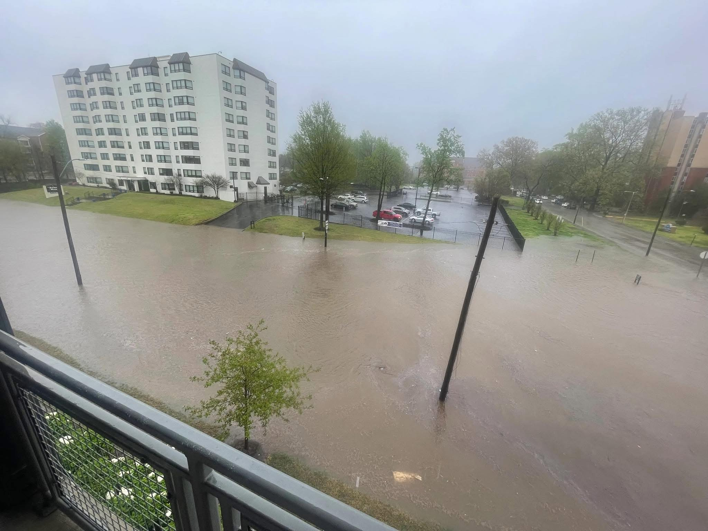
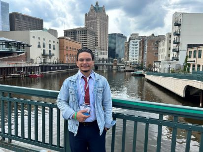

Gallery
Tracing the Process









Ph.D. Candidate in Civil Engineering · University of Memphis
From the high mountains of Nepal 🇳🇵
I'm a Ph.D. candidate in Civil Engineering at the University of Memphis, specializing in stochastic hydrology, meteorology, and engineering applications. My research improves modeling of short-duration extreme rainfall for urban infrastructure design, climate resilience, and flood risk management.
Advisor: Dr. Claudio Meier, University of Memphis
🎓 Ph.D. Candidate — University of Memphis
🇳🇵 Originally from Nepal, now based in Memphis, TN
🧑💻 Open-source contributor — nsEVDx
🌍 Ex Government Engineer — Ministry of Irrigation, Nepal
"Always curious. Always computing."







Click any card to expand details ↓
nsEVDx — open-source Python library for extreme value distributionsOpen to research collaborations, consulting, and academic opportunities.
Press SPACE or tap to jump. Avoid the obstacles! 🦕
SPACE / TAP TO JUMP · TAP AGAIN TO RESTART